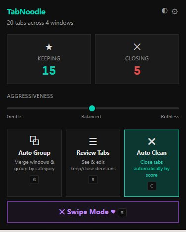
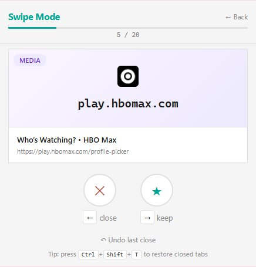
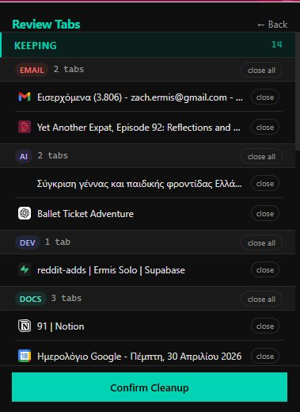

Tabula Noodle scores every open tab, then tells you exactly what to keep, archive, and close. No login. No cloud. Just a clean browser.
of tabs people keep open are forgotten within 10 minutes of opening them.
average RAM usage per open Chrome tab. Your laptop has thoughts about this.
tools built to help you decide. Until now.
Open the popup. Tabula Noodle reads every tab across every window, scores them, and shows you the verdict. Confirm, and it's done.

Decisions are hard. Tabula Noodle makes them one at a time. Left arrow to close, right arrow to keep. You'll cruise through 50 tabs in under a minute.

Tabula Noodle reads your tabs and files them by category — Docs, Articles, Media, Tools, Searches. Your tab bar finally makes sense.

You set the dial. Tabula Noodle closes as much — or as little — as you're comfortable with. No nagging, no defaults-that-aren't-really-defaults.
No accounts. No servers. No tracking. Tabula Noodle runs entirely on your machine — the way a browser extension should.
All scoring happens in your browser. There is no backend to hack.
Install, open, clean. We never ask who you are.
Your tab titles and URLs are yours. We never see them.
Every cleanup is reversible. Nothing is deleted you can't bring back.
The free tier stays free, forever. Pro adds AI smarts, automation, and a searchable archive — for folks who live in their browser. $2.99/mo, 7-day trial, no credit card to start.
Smarter grouping powered by Claude Haiku. "Japan trip research", "React debugging session" — labels that actually make sense.
Daily, every three days, weekly. Pick your rhythm. Notification with one-click undo after every run.
Every tab you've ever closed, searchable and grouped by session. Reopen any of them with a click.
Weekly charts, category breakdowns, and the occasional humble brag ("you've saved 14 hours of decision-making").
"Never close notion.so." "Always archive YouTube tabs after an hour." Build your own logic with a simple rule builder.
Type what you're working on. Tabula Noodle keeps only the tabs that match, and brings the rest back when you're done.
Free on the Chrome Web Store. No account, no credit card, no catch.